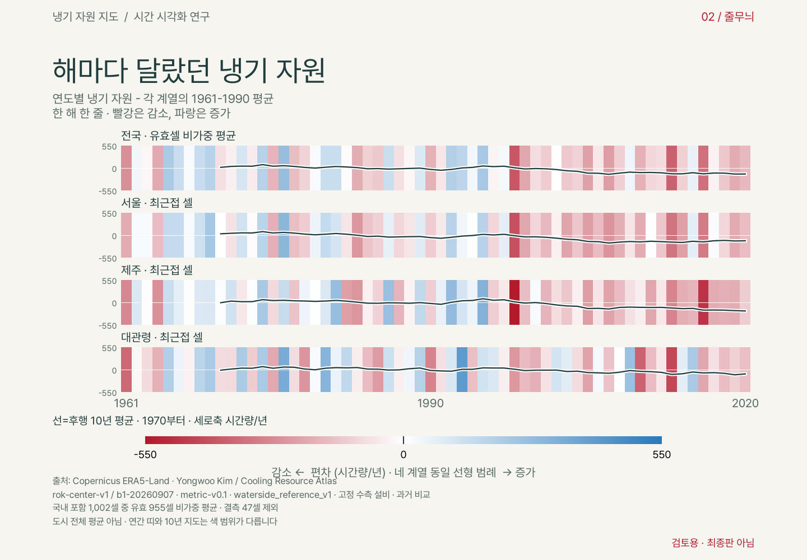

Methods · choices · limitations
시간량으로 바꾸기 전에,
무엇을 고정했는가
기후 입력의 변화와 설비 가정을 분리하고, 경계선 선택과 오차를 함께 공개합니다.
공개 패키지 검토본. 원 지표·국가 마스크는 유지하고 시간 비교의 기준과 고정 색 범위를 아래에 공개합니다. 프로젝트 라이선스는 2026-10-20 발효되었으며, 이해 시험·최종 공개 승인은 아직 남아 있습니다.
1. 질문과 자료
자연이 제공하던 냉기 자원은 얼마나 줄었을까요? 한국의 60년 기상자료를 시간량으로 바꿔 보았습니다. 냉각 설비를 고정한 상태에서 날씨가 제공하는 냉기 자원을 비교하는 자원 회계입니다. 냉기를 저장 물질로 취급하거나 실제 소비량으로 해석하지 않습니다.
ERA5-Land hourly의 2 m 기온·2 m 이슬점·지표기압에서 PsychroLib SI로 습구온도를 구합니다. 원자료는 0.1° 격자, 1961–2020의 720개월입니다. 두 30년 기간 1961–1990 / 1991–2020의 셀별 연평균을 비교합니다.
공통 식별자: metric-v0.1 / waterside_reference_v1 / rok-center-v1. 설정 해시: sha256:7a55a7c87abae162f8e9e0a263324e9153731205fd7f46efffe32be4c19813bc. 입력 생성 코드: 4366c4d8f3e5eb09bcda7c03698bd5250180e872.
2. 세 지표, 두 종류의 비교
- ENCH (Equivalent Natural Cooling Hours, 자연냉각 등가시간)
- 이 사이트에서 냉기 자원을 재는 지표이며, 단위 이름은 시간량입니다. 고정 수측 설비에서 자연냉각 충족률 f_free(0–1)를 시간별로 합하고 8,760시간/년으로 정규화합니다. 부분 기여를 합친 환산량이지, 전부 자연냉각만 가능한 시계 시간이 아닙니다. 절반만 식혀 준 2시간은 1시간량입니다. 기간 손실은 기준−비교입니다.
- NCH20 — 서늘한 야간시간
- KST 21:00–06:59 건구온도 ≤20°C인 비율을 3,650시간/년으로 정규화합니다. 기간 손실은 기준−비교입니다. 단위는 실제 시계 시간인 시간/년이며, 부분 기여를 환산한 냉기 자원의 시간량/년과 다릅니다. 같은 시간대에 겹칠 수도 있어 합산하지 않습니다.
- +1 K 민감도 — 조건부 실험
- 민감도는 1991–2020 기상자료의 건구·노점을 함께 +1 K 이동시키고 기압·설비를 고정했을 때의 냉기 자원 유한차분입니다. 특정 습도 경로에 조건부이며 실제 미래 반응계수나 관측으로 검증된 예측이 아닙니다. 1991–2020의 건구·노점을 함께 +1 K, 기압·설비를 고정한 냉기 자원 감소량입니다. 노점 강하를 보존하는 섭동이며 상대습도 고정이나 노점 고정 실험이 아닙니다. +2 K 값은 그 실험의 총 손실이지 1 K당 값이 아닙니다. 미래 특정 시점을 가리키지 않습니다.
원본 delta_*는 비교−기준입니다. 지역별 손실 지도·요약 CSV의 loss는 부호를 뒤집어 양수=감소로 표시합니다. 첫 흐름의 십년 편차 지도·막대·줄무늬는 비교−기준이므로 음수가 감소입니다. 냉기 자원과 그 민감도는 시간량/년, NCH20은 시간/년입니다; 민감도는 +1 K 실험의 유한차분이라는 조건을 붙입니다.
보조 자유냉각 삼분할은 완전자유·부분자유·완전기계냉각입니다. 세 시간의 합은 8,760시간이므로 독립 정보는 둘입니다. 손실률을 사용할 때 분모는 총량입니다. 감응 밴드만 분모로 하는 비율은 진단용이며 헤드라인에 쓰지 않습니다.
소수 자릿수는 계산값을 표시·대조하기 위한 것이며 0.1시간량·0.1시간 수준의 정확도를 뜻하지 않습니다. 자료·설비·경계 선택과 기간 간 변동에 따른 불확실성을 합친 신뢰구간은 제시하지 않았습니다. 기준·비교·차이는 각각 반올림하므로 표시값의 뺄셈과 차이가 날 수 있습니다.
시간 변화를 읽는 세 가지 방법
전국 값과 헤드라인: 두 표준 30년 기간
연도별 전국 냉기 자원은 국가 마스크 included=True인 1,002셀 중 60년 모두 유효한 955셀의 비가중 평균입니다. 전 기간 결측인 47셀은 제외하며 0으로 채우지 않습니다. 면적·인구가중 평균이나 전국 총량이 아닙니다.
전국 연간값 = 유효 955셀의 냉기 자원 산술평균30년 감소량 = mean(1961–1990) − mean(1991–2020)
기준 6,265.389 → 비교 6,174.487 시간량/년, 감소 90.902 시간량/년입니다. 감소율은 기준기간 전체 냉기 자원를 분모로 한 1.450865%이며, 헤드라인은 각각 91시간량·1.5%로 반올림합니다. 누적 손실이나 매년 줄어드는 속도가 아닙니다.
십년 편차 지도와 막대: 다른 기간을 비교합니다
구간은 1961–1970, 1971–1980, 1981–1990, 1991–2000, 2001–2010, 2011–2020입니다. 각각 10개 완결연도이며 2020은 마지막 십년에 포함합니다. 1961–1969처럼 9년인 첫 구간이나 2020 단년 구간은 만들지 않습니다.
셀별 편차 = 해당 십년 셀 평균 − 그 셀의 1961–1970 평균전국 막대 = 해당 십년 전국 평균 − 1961–1970 전국 평균
정적 여섯 지도와 막대는 서로 겹치지 않는 십년 평균이며 후행 이동평균선이 아닙니다. 지도는 기존과 같은 국가 마스크·0.1°셀·EPSG:5179 투영·전국 고정 시야이며 공간 보간하지 않습니다. 막대는 0에서 출발하고 중간의 증가도 표시합니다.
2D 십년 지도 색은 −300~+300 시간량/년, 0 중심 대칭 선형 범례로 전 셀·전 51개 후행창의 편차 범위(−255.47~+107.35)를 포함합니다. 여섯 2D 십년 지도와 2D 편차 영상에서 고정합니다. 3D는 아래 B 영상 색 규칙을 따릅니다. 빨강은 음의 변화(감소), 파랑은 양의 변화(증가), 0은 기준과 같음, 회색 빗금은 결측입니다. 기준 지도에서 흰색은 냉기 자원 자체가 0이라는 뜻이 아닙니다.
헤드라인의 30년 비교와 막대의 첫·끝 십년 비교는 기준·비교 기간이 달라 감소량이 다릅니다. 어느 수치도 연간 감소 속도나 누적량이 아닙니다. 이 비교에서는 일 단위 환산을 사용하지 않습니다.
선택 재생 편차 영상
각 셀의 후행 10년 평균에서 1961–1970 평균을 뺍니다. 10개 유효연도가 모두 있어야 계산하며, 첫 창 1961–1970부터 마지막 창 2011–2020까지 종료연도 1970–2020의 51프레임·8fps입니다. 공간·시간 보간하지 않고 자동재생하지 않습니다. 겹치는 창은 독립 표본이 아닙니다.
보조 영상: 기준면 아래로 꺼지는 3D B판
정적 지도 4종은 3D가 기본이며, 어느 지도에서든 3D / 2D 버튼을 누르면 모두 함께 전환됩니다. 선택은 이 브라우저에 저장됩니다. JavaScript가 꺼져 있어도 3D와 2D 원본 링크를 볼 수 있습니다.
정적 3D 지도는 B 영상 렌더러의 스냅샷입니다(용우 2026-10-21). v1~v7의 별도 지도 시점·받침·기둥·벽 음영은 폐기했습니다. cooling_3d.py의 같은 함수로 원래 셀 평면과 인접 유효셀 사이 단차 면을 그립니다. 카메라는 직교투영·고도 34°·방위 −100°, 기본 box는 460:630:340, 깊이 범위는 −300~+150입니다. B의 해안선·기준 안내·배경톤·프레임 구도·무음영 면 색도 그대로입니다. 직전 −145°에서 −100°로 왼쪽 45° 되돌렸으며(용우 10/21), 고도·높이·색·조명은 그대로입니다. 북쪽 화살표는 실제 투영한 북쪽 방향(화면 위쪽·약간 왼쪽)을 가리키고, 기준 0 안내는 지도 밖 바다 쪽에 둡니다. 제주 라벨은 섬 서쪽에서 해당 셀 높이를 따라 움직여 본토와 겹치지 않게 합니다. 깊이는 실제 지형·부피·저장량이 아닙니다.
십년 6장은 영상의 1961–1970, …, 2011–2020 창과 같은 그림입니다. 데스크톱 3열×2행, 모바일 2열×3행으로 온전한 프레임을 붙이고 기간 표지만 바깥에 추가했습니다. 모바일에서는 원본 프레임의 작은 글자 대신 13px 설명·12px 색 눈금으로 기간·단위·색·결측을 함께 안내합니다. 그림을 누르면 큰 원본을 열 수 있습니다.
네 지도 모두 높이는 −손실이며, 0 기준면을 옮기지 않습니다. 민감도는 최저 높이가 −333.7이므로 하단 범위만 −400으로 넓히고 box z=415.5556 및 확대 보정으로 B와 같은 시간량당 높이(340/450)와 수평 축척을 유지합니다. 나머지는 B의 −300~+150 그대로입니다. NCH20도 같은 수치당 높이이지만 단위는 시간/년: 시간량과 서로 다른 양이며 합산하지 않습니다. 그림 전체의 표시 크기가 다르면 화면 길이는 달라질 수 있으므로 눈금으로 읽으세요.
정적 3D도 B 영상의 색 규칙을 따릅니다: 손실 −110 진파랑, 0 파랑, 125 흰색, 260 빨강. 파랑도 0보다 크면 손실입니다. 2D의 흰색=0과 달리 3D의 흰색=125 손실입니다(민감도 2D는 기존 최소–최대 범례). 2D 그림의 색 범위·눈금은 바꾸지 않았습니다. 민감도에서 260을 넘는 값은 같은 빨강으로 포화되지만 깊이는 실제 값 그대로입니다. 모든 면은 B와 같이 무음영이며, 단차 면 색은 인접한 실제 셀의 색을 씁니다. 결측 47셀은 회색 0 높이 표식이지만 값 0이 아닙니다. 앞쪽 셀이 뒤를 가릴 수 있으므로 정확한 값은 2D에서 확인하세요. 스냅샷 입력 SHA·높이·색·포스터 비교 manifest
기존 보조 3D 영상 (정적 3D와 같은 렌더러·색 규칙)
높이 = 해당 후행 10년 셀 평균 − 그 셀의 1961–1970 평균. 1961–1970 기준면의 높이는 0입니다. 음의 높이(아래)는 손실, 양의 높이(위)는 증가이며 잘라내지 않습니다. 깊이는 시간량/년 단위의 편차이지 실제 지형·부피·저장량이 아닙니다.
높이 축은 −300~+150 시간량/년, 시점은 남쪽에서 약간 서쪽 상공에서 북쪽·약간 동쪽을 보는 고정 직교투영입니다. 원래 셀별 평면을 유지하고 인접 유효셀 사이에만 수직 면을 붙입니다. 공간 보간이나 셀값의 평활화는 없으며, 결측 47셀은 회색 기준 높이에 놓되 통계에서 제외합니다.
색의 양은 손실 = −편차입니다. −110~260 시간량/년 고정 선형 범위에서 −110은 진한 파랑(#08306b), 0은 파랑(#2879bd), 125는 흰색, 260은 진한 빨강(#b2182b)으로 연결합니다. 2D에서 흰색은 변화 0이지만, 3D B판의 흰색은 125 시간량/년 손실입니다. 색을 서로 같은 수치로 읽지 않습니다. 조명 명암으로 값을 바꾸지 않습니다.
영상은 1970–2020년 종료의 51개 후행 10년 평균 사이를 선형 전환합니다. 중간 화면은 추가 관측값이 아니라 전환용 표현입니다. 24 fps·240프레임·10초, 양 끝에서 12프레임씩 머뭅니다. 클릭 재생만 제공하고 자동재생하지 않습니다. 포스터는 MP4의 마지막 프레임입니다. 3D 입력·출처·설정·미디어 manifest
보조 그림: 해마다의 변동을 숨기지 않은 냉기 줄무늬
연간 편차 = 해당 연도 냉기 자원 − 같은 계열의 1961–1990 평균. 전국과 서울·제주·대관령 최근접 셀을 각각 자기 기준 평균과 비교합니다. 도시 전체 평균은 아닙니다.

줄무늬는 네 계열 전체의 최대 절대 편차를 포함하는 −550~+550 시간량/년의 고정 선형 범례입니다. 손실이 클수록 진한 빨강입니다. 0은 중립, 양의 편차는 파랑입니다. 선도 같은 범위의 시간량/년 축을 사용하며 회귀선·예측선이 아닙니다. 지도 ±300과 줄무늬 ±550의 같은 색을 같은 크기로 비교하면 안 됩니다.
전국 연간값의 선형 추세를 제거한 잔차 표준편차는 약 139 시간량/년(ddof=0)으로 30년 평균 차이 약91 시간량/년보다 큽니다. 이 표준편차는 신뢰구간이나 원인별 기여, 추세 유의성 판정이 아닙니다.
검토 기록: 냉기 자원 절대 수준 영상
수준 영상은 이번에 표시 용어만 갱신했으며, 감소량이 아니라 냉기 자원 수준을 5,100–7,300 시간량/년 고정 범례로 보여줍니다. 지역별 수준 차이가 시간 변화보다 커 변화가 작게 보일 수 있어 첫 흐름에서 제외했습니다. 수준 타임랩스 MP4 · 수준 GIF

시간 시각화의 입력·설정·생성 코드·폰트 해시와 이미지/영상 해시는 시간 시각화 manifest에 기록했습니다. 기존 데이터 릴리즈 manifest는 바꾸지 않았습니다.
3. 경계선을 어디에 긋느냐가 답을 만듭니다
| 선택 | 계약 |
|---|---|
| 설비 | 공급 18°C / 환수 24°C / 접근온도 3+2 K |
| 감응 밴드 | 습구 13–19°C |
| +1 K 섭동의 습도 관례 | 건구·노점 각각 +1 K, 기압·설비 고정. 노점강하 T_db−T_dp 보존, 상대습도 보존 아님 (+2 K도 같은 관례) |
| 완전성 | 셀×연도 유효시간 98% 미만은 null |
| 기간 평균 | 결측 연도 제외, 0 대체 없음 |
| 국내 포함 | ADM0가 EPSG:4326 셀 중심점을 covers |
| 국내 통계 | 유효셀 비가중 분포, 전국 총합 아님 |
냉각 감응이 있는 온난한 비포화 구간에서는 노점강하 보존 시 상대습도가 일반적으로 조금 올라가므로, 상대습도 보존 대안보다 습구 상승과 냉기 자원 손실을 크게 만드는 방향입니다. 포화 상태나 자유냉각 충족률의 상·하한에서는 차이가 없을 수 있으며, 전국 집계 차이의 크기·지역 순위는 대안 재계산을 하지 않아 확정하지 않습니다.
지도·통계에 동일 마스크를 적용했습니다. 경계 위는 포함, 버퍼·보간은 없습니다. 선택 1,002셀 중 유효 955셀, 전기간 결측 47셀입니다. 이번 유효셀은 두 기간 각각 30년이 유효합니다. 후속 데이터에서는 다시 검증해야 합니다.
경계는 Natural Earth를 원천으로 하는 geoBoundaries gbOpen KOR-ADM0-49999745, represented year 2021, 고정 버전 9469f09입니다. 법정·지적 경계가 아닙니다. 수집영역 33.0–38.7°N / 125.6–131.0°E 밖인 독도·서해 일부 도서는 포함되지 않습니다. 작은 섬·해안도 중심점 규칙이나 결측 때문에 빠질 수 있습니다.
두 기간의 차이는 고정 설비 모형에 서로 다른 기상 입력을 넣어 얻은 기술적 비교입니다. 온실가스 강제력, 도시화·국지 폐열, 자연변동 각각의 기여를 분리하거나 인위적 기후변화에 귀속하지 않습니다. 30년 평균 비교 자체가 자연변동의 제거를 보장하지는 않습니다. 개별 시설의 책임이나 냉각 사용량도 식별하지 않습니다. +1/+2 K 비교는 동일 설정에서 섭동 크기에 따른 응답을 살펴본 것입니다. 밴드 폭·설비·기준기간·습도 관례를 바꾸는 감도분석을 대신하지 않으며, 해당 대안 분석은 아직 수행하지 않았습니다. 냉기 자원의 습구 밴드뿐 아니라 NCH20의 20°C 문턱·야간 시간창, 비교 기준기간, 공간 집계와 결측 규칙도 결과를 좌우합니다. 이 선택들을 바꾸는 감도분석은 미완료입니다. 현재는 엑서지를 계산하지 않으므로 열역학적 기준상태(dead state)를 적용하지 않았으며, 1961–1990은 통계적 비교 기준기간이지 dead state가 아닙니다. 향후 엑서지 계정을 도입한다면 기준환경을 별도로 정의하고 그 선택의 민감도를 검토해야 합니다.
4. 검증 결과와 열린 한계
- ASOS 서울·대관령·제주 1991–2020 짝자료의 자유냉각 3분류 일치도는 91.8–94.1%입니다. 전체 paired coverage는 약 61.5%; 초기 열역학 쌍 결측이 크고 2011–2020은 약 100%입니다. 관측 지점 이전·환경 변화에 대한 균질화는 하지 않았습니다. 이 대조는 서울·대관령·제주의 1991–2020 짝자료에 한정됩니다. 전국 모든 지역, 1961–1990을 포함한 장기 변화, 미래 또는 조건부 +1 K 민감도를 검증한 결과가 아닙니다. 실제 설비 운전 자료와의 검증도 수행하지 않았습니다.
- 냉기 자원 편향은 서울 +5.3 시간량/년(0.09%), 대관령 +258.6(+3.6%), 제주 −167.7(−3.1%)입니다. 여기서 편향은 ASOS−ERA5입니다. 서울에서 보고된 ASOS−ERA5 기온 차이(+1.3~2.0°C)와 이슬점의 음의 차이는 습구 기반 냉기 자원에서 서로 상쇄될 수 있습니다. 도시열섬 과소 표현이 기온 경로로 냉기 자원를 과대평가하게 하는 효과와, 복합 지표의 순편향은 구분해야 합니다. 냉기 자원 차이가 작다는 사실만으로 입력 오차나 장기 변화의 오차가 작다고 결론내리지 않습니다. v0.1은 무보정입니다.
- 도시열섬과 복잡한 지형이 충분히 표현되지 않습니다. 서울 등 도시 표시는 최근접 셀(약 10km 격자)이며 동네·건물별 판정 불가입니다. 기준 수측 설비는 산업 전문가 검토 전입니다.
- R-006: 계절 분해 완료. 서울 +1 K 손실의 94.9%가 5–10월입니다. 14.06%/K는 서울 비교기간 온난기 총량 분모의 보조 지표입니다. 제주 온난기 비중은 80.4%라 전국에 일반화하지 않습니다.
- R-007: 열림. 손실/민감도는 동반 섭동 경로의 등가 진폭이지 습구 승온량이 아닙니다. 같은 ERA5 입력의 섭동 전후 Δ습구 진단은 독립 관측 검증이 아닙니다. 대관령 괴리의 원인은 미확정입니다.
- R-012/R-013: 2026-09-17 검토 해소. 북한 포함 bbox 통계를 국내 통계로 쓰던 범위 문제를 중심점 마스크로 교정했습니다. 서울 지점 정본 114.1 시간량/년은 연간, 113.0은 5–10월 부분값입니다. 이번 회계표의 격자 연간값 약 114와는 입력·정밀도가 다릅니다.
에너지 비용·건강 결과·실제 서비스 사용량을 측정한 지표가 아닙니다. SEEA EA는 구조를 참고한 틀이지, 이 산출물이 그 표준에 적합한 서비스 흐름 계정이라는 뜻은 아닙니다. 현재는 생태계 자산의 냉각 기여를 분리하지 않았고, 수혜자와 실제 서비스 사용량도 정의·측정하지 않았습니다. 따라서 잠재 기상 냉기 자원 지표를 실제 생태계 서비스 흐름으로 해석할 수 없습니다. 여기서 ‘자원’은 고정 설비 조건에서 활용 가능한 잠재 냉기 자원를 뜻합니다. 냉기 자원의 감소는 엑서지 파괴량이나 엔트로피 생성량의 측정·추정치가 아닙니다. 엑서지·엔트로피는 개념적 배경일 뿐, 이 시간량 지표를 그 물리량으로 환산하지 않았습니다.
One-page research brief
5. 연구 요약: 해석을 어디에서 멈췄는가
AI 협업 초안 · 연구 책임자의 최종 편집 전. 아래 문장은 연구자 본인의 완성된 진술을 대신하지 않습니다.
문제 정의
설비 효율과 기후 위험 노출 사이에서, 기후가 제공하는 냉기 자원 자체의 변화를 시간량 단위로 기록할 수 있는가? 냉기 자원(시간량)과 야간 저온시간(시간)을 구분하고 설비 조건을 고정해 이를 비교했다. 선행연구의 완전한 공백이나 새로운 인과 식별을 주장하는 작업은 아니다.
기온 평균만 비교하는 대신 습도를 반영한 습구온도와 설비 충족률을 시간별로 결합해, 같은 평균 기온 변화라도 냉기 자원 변화가 달라질 수 있음을 분석합니다. 이 추가 정보의 실제 운전 타당성은 아직 검증하지 않았습니다.
식별 전략과 한계
설비를 고정하고 기후 입력만 바꾼 기간 비교로 모형 안에서의 차이를 분리했다. 이것은 온실가스·도시화·국지 폐열·자연변동의 인과 효과를 식별한 준실험이 아니다. 조건부 섭동 역시 관측된 미래가 아니다. 독립 관측 대조의 범위와 동일 입력 진단의 범위를 구분했다.
유리한 해석을 철회한 두 사례
첫째, 한국 주변 bbox의 민감도 최솟값이 북한 셀임을 확인해 이를 대한민국 통계로 쓰는 해석을 철회했다. 국가 경계 중심점 규칙을 명시하고 같은 마스크로 지도와 통계를 다시 맞췄다. 둘째, 대관령의 과거 손실/민감도 괴리를 구조적 원인의 증명으로 읽던 해석을 철회했다. 동반 섭동의 등가 진폭과 습구 승온량이 다름을 인정하고 R-007을 열린 질문으로 남겼다.
기여와 다음 반증
기여는 큰 수치의 제시보다 문제·분모·공간 범위·부호·비교 종류를 검증 가능한 계약으로 남긴 데 있다. 핵심 가정은 설비 조건 고정과 지정한 습도 섭동 경로입니다. 후속 실험에서는 독립 기상 입력 및 대안 설비·습도 경로에서 손실의 부호와 지역별 결론이 유지되는지 점검하고, 유지되지 않으면 해당 결론을 그 조건에 한정하거나 철회합니다. 이 실험은 아직 수행하지 않았습니다. 비전문가가 냉기 자원과 실제 사용량을 구분하는지도 시험한다.
판단과 구현의 분업
연구 책임자가 목적과 공개 범위를 판단·승인하고, AI를 보조적으로 활용해 구현과 별도 비판 검토를 수행했습니다. AI 검토는 외부 분야 전문가 검증을 대신하지 않습니다. 연구 요약의 최종 주장과 표현은 연구 책임자가 직접 편집합니다.
NLP·AI와의 연결은 아직 가설
이 산출물 자체는 NLP 연구 성과가 아니다. 후속 연구로는 지표 계약에서 설명문을 만들 때 단위·비교·인과 범위를 보존하는지 평가하는 과제를 제안할 수 있다. 오독 유형별 평가 자료와 사람의 이해 시험이 필요하며, 아직 수행한 결과로 제시하지 않는다.
6. 재현·귀속·라이선스
공개 파일과 요약 CSV는 manifest.json의 SHA-256으로 검증합니다. 데이터 README와 데이터 사전에 기간·단위·부호·버전이 있습니다. 외부 원자료 없이 이 집계 패널로 표와 지도를 재현할 수 있습니다. 원 기후 시계열부터의 완전 재처리는 별도 경로입니다.
코드 MIT / 프로젝트 산출 집계 데이터·지도·영상 CC BY 4.0(2026-10-20 발효). 라이선스 발효는 외부 게시 승인이 아닙니다. 데이터 README의 조립 당시 표기는 manifest SHA 보존을 위한 이력이며, 현재 이용허락은 LICENSE-DATA를 따릅니다. 기후 원자료의 Copernicus 조건은 별도로 적용됩니다.
Contains modified Copernicus Climate Change Service information (2026). ERA5-Land hourly data from 1950 to present, DOI: 10.24381/cds.e2161bac. Neither the European Commission nor ECMWF is responsible for any use that may be made of the Copernicus information or data it contains.
원자료: ERA5-Land (CDS) · 현재 원자료 라이선스 CC BY 4.0 (2026-09-21 확인). 시간별 기온·이슬점·기압을 로컬에서 냉기 자원·야간시간 지표로 집계하고 지도·영상으로 변형했습니다. 원자료 이용허락과 2026-10-20 발효된 프로젝트 고유 기여의 이용허락은 별개이며, 취득 당시 동의 버전 확인은 남아 있습니다.
경계는 Natural Earth / geoBoundaries Public Domain입니다. 이 주장은 해당 경계 원천에 관한 것으로 geoBoundaries 전체나 프로젝트 전체의 동일 라이선스를 뜻하지 않습니다. 지도·영상은 Pretendard v1.3.9 Regular(OFL 1.1)로 렌더했습니다. 폰트와 원문 라이선스는 코드 저장소에 포함하며 site에는 래스터 결과만 둡니다.
코드 라이선스 · 데이터 라이선스 · 제3자 귀속·조건
냉기 자원 지도 / Cooling Resource Atlas의 공개 주소는 kimkv3.github.io/cooling-atlas입니다. 검토본을 먼저 게시해 이해 시험을 진행하며, 이미지·영상의 검토용 표시는 유지합니다. 최종판 전환은 이해 시험·최종 검토 이후 별도로 진행합니다.